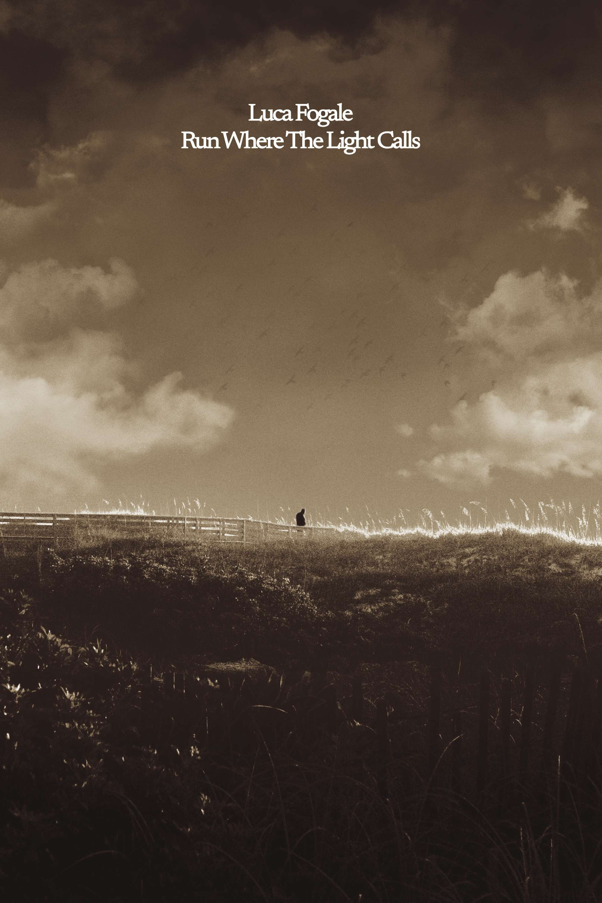
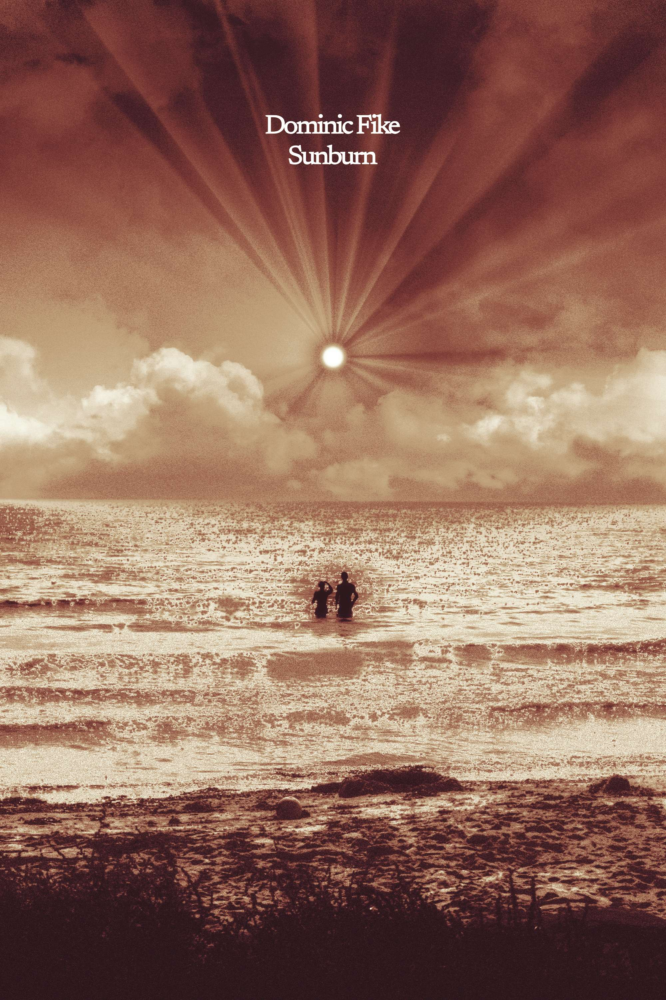
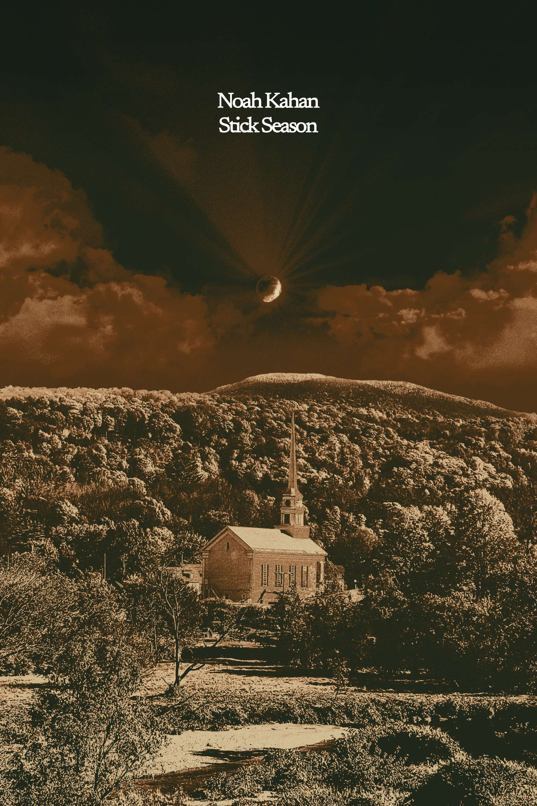
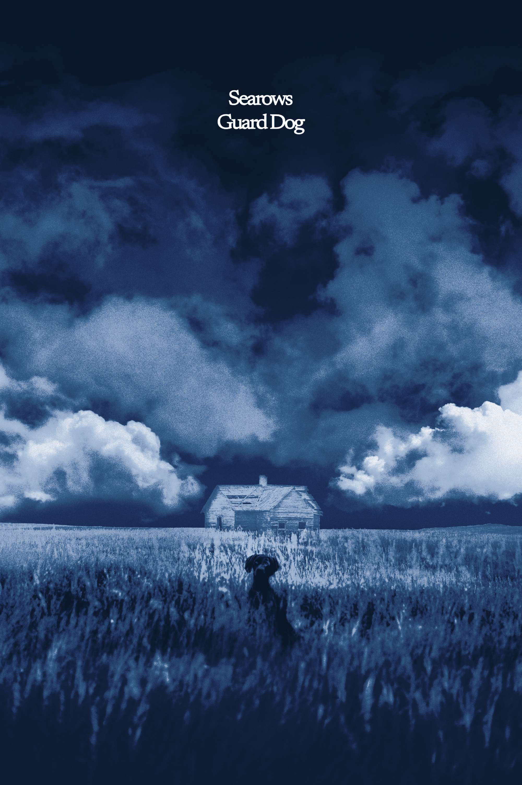
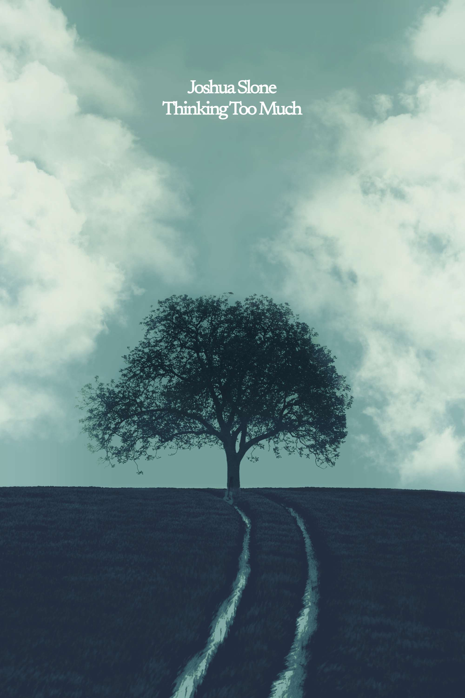
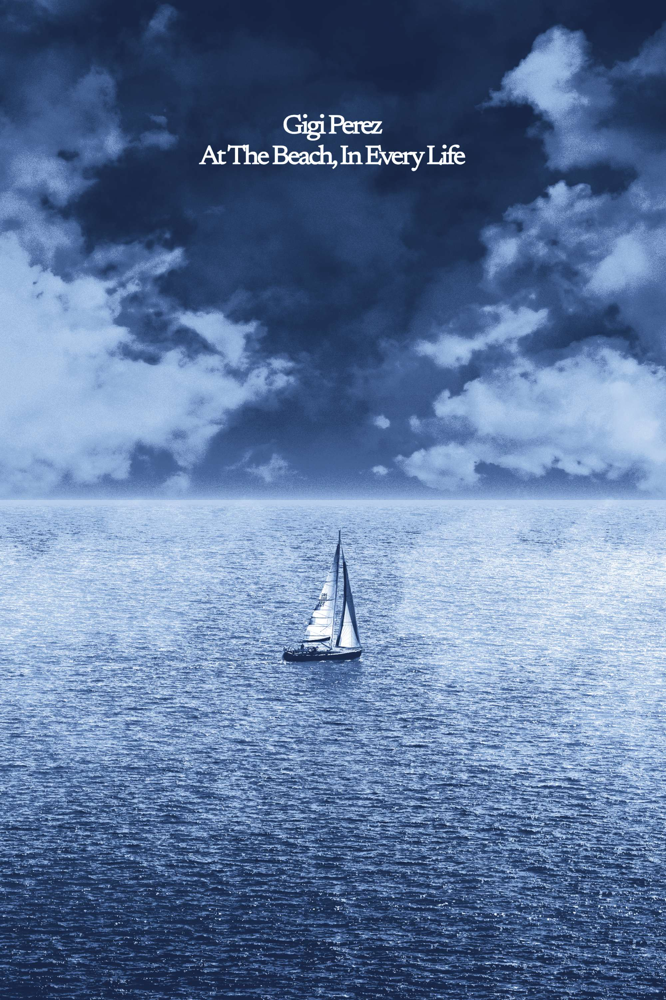

Luca Fogale
Run Where The Light Calls
A quiet composition for a calm & centered album, with a lot of detail.
Credits to Jackson Conner and Usha Kiran for the original imagery.

Featured Series
A collection of posters I made for some of favourite albums of all time, by some of my favourite artists of all time.

Luca Fogale
A quiet composition for a calm & centered album, with a lot of detail.
Credits to Jackson Conner and Usha Kiran for the original imagery.

Dominic Fike
Capturing Fike's formative years growing up in Florida's warmth.
Credits to Marko Brečić for the original imagery.

Noah Kahan
Featuring Vermont's church as the focus, a symbol of Kahan's hometown.
Credits to Sadia Afreen for the original imagery.

Searows
A blue scheme to reflect the album's cover, with the dog imagery.
Credits to Steven Cordes and Juan Manuel Sanchez for the original imagery.

Joshua Slone
Easily my favourite album of this year, maybe even the last few years.
Credits to Wolfgang Hasselmann and Brent Ninaber for the original imagery.

Gigi Perez
The oceanic, coastal, lonely imagery that is heard throughout the album.
Credits to Alexandros Giannakakis for the original imagery.